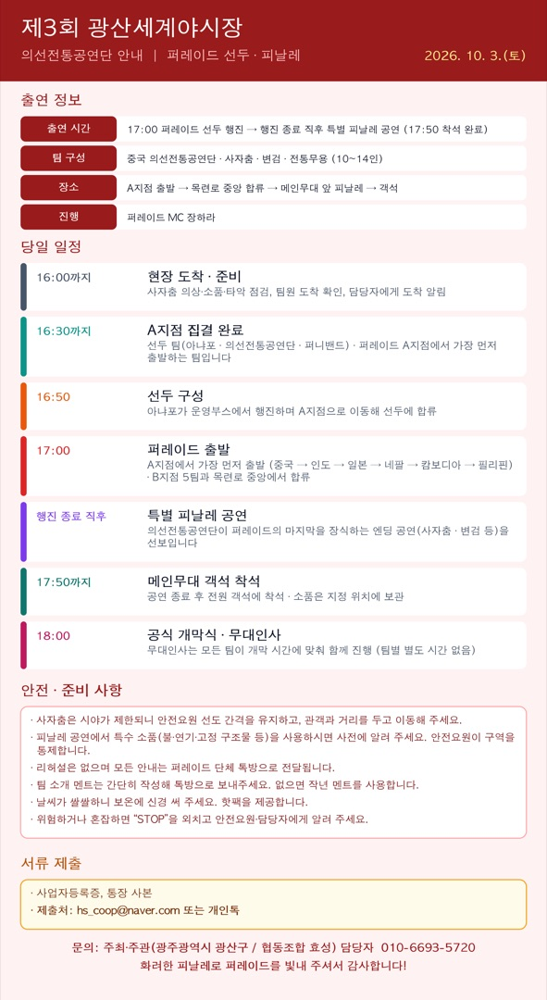

이미지를 누르면 크게 볼 수 있고, 길게 눌러 저장할 수 있습니다.
의선전통공연단은 올해 11개국 거리 퍼레이드의 선두 팀이자, 행진 종료 후 특별 피날레 공연을 맡아 주십니다.
10월 3일(토) 일정과 준비 사항을 안내드립니다. (첨부 이미지 참고)
출연 정보
- 일시: 2026. 10. 3.(토) 17:00 퍼레이드 선두 행진 → 행진 종료 직후 특별 피날레 공연 (17:50까지 착석 완료)
- 팀 구성: 중국 의선전통공연단 · 사자춤, 변검, 전통무용 (10~14인)
- 장소: A지점 출발 → 목련로 중앙 합류 → 메인무대 앞 피날레 → 객석
- 진행: 퍼레이드 MC 장하라
당일 일정
- 16:00까지 현장 도착 → 사자춤 의상·소품·타악 점검, 팀원 도착 확인, 담당자에게 도착 알림
- 16:30까지 A지점 집결 완료 (선두 팀: 아냐포 · 의선전통공연단 · 퍼니밴드)
- 16:50 아냐포가 운영부스에서 행진하며 A지점으로 이동해 선두에 합류
- 17:00 퍼레이드 출발: 의선전통공연단은 A지점에서 가장 먼저 출발합니다.
- A지점(6팀): 중국 → 인도 → 일본 → 네팔 → 캄보디아 → 필리핀
- B지점(5팀): 태국 → 스리랑카 → 우즈베키스탄 → 베트남 → 한국
- 두 곳에서 출발해 목련로 중앙에서 하나로 합류합니다.
- 행진 종료 직후 의선전통공연단 특별 피날레 공연 (퍼레이드의 마지막을 장식하는 엔딩 공연)
- 17:50까지 퍼레이드 참가 전원 메인무대 객석 착석 (소품은 지정 위치에 보관)
- 18:00 공식 개막식: 무대인사는 모든 팀이 개막 시간에 맞춰 함께 진행하며, 팀별 별도 시간은 없습니다.
안전·준비 사항
- 사자춤은 시야가 제한되니 안전요원 선도 간격을 유지하고, 관객과 거리를 두고 이동해 주세요.
- 피날레 공연에서 특수 소품(불·연기·고정 구조물 등)을 사용하시면 사전에 알려 주세요. 안전요원이 구역을 통제합니다.
- 리허설은 없으며 모든 안내는 퍼레이드 단체 톡방으로 전달됩니다.
- 팀 소개 멘트는 간단히 작성해 톡방으로 보내주세요. (없으면 작년 멘트를 사용합니다.)
- 날씨가 쌀쌀하니 보온에 신경 써 주세요. 핫팩을 제공합니다.
- 위험하거나 혼잡하면 “STOP”을 외치고 안전요원·담당자에게 알려 주세요.